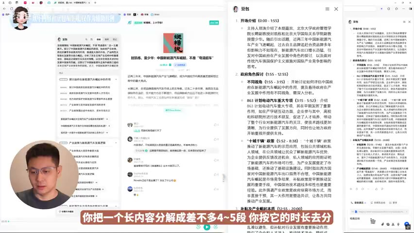

原视频 · 在线回看
点击后联网加载 B 站播放器；本地不下载整段视频。

原视频 · 在线回看
点击后联网加载 B 站播放器；本地不下载整段视频。
来源：每个人都应该掌握的快速调研法2.0！
UP 主：老蒋巨靠谱 · 时长：19 分 15 秒 · 阅读强度：深度
假如你有一个下午，想弄清新能源汽车行业大致怎样运转，眼前却有一份长报告、几场访谈和几篇外文材料。只看文章，容易错过访谈里的具体经验；每段内容都从头读完，又很难在有限时间内完成。AI 能够先帮助处理这些材料，让我们有机会接触更多内容，再把注意力放到真正需要理解的问题上。
这里沿着 2024 年底使用豆包的一次调研来理解这种合作。具体界面属于当时的产品版本，方法可以拆成四个连续环节：确定问题，阅读已有材料，继续追问，最后组织自己的回答。每个环节里，AI 提供的帮助并不相同。
调研一开始，仍然值得先离开搜索框想一会儿：为什么突然想了解这件事？起因可能是一条新闻，也可能是自己的工作或生活需要。那个起因里，往往已经包含真正想弄清楚的问题。如果马上让 AI 决定全部方向，最后得到的可能只是任何人都能使用的一份通用介绍。
新能源汽车的例子里，首先需要知道行业的基本结构，随后才是个人关心的问题。老蒋想了解中国新能源汽车为什么发展得快，以及未来竞争中哪些企业可能留下来、它们可能具备什么特点。后一个问题涉及未来判断，调查能够帮助理解竞争条件，却无法给出已经确定的终局。
有了自己的问题后，再问 AI 有哪些常见话题，就容易判断它的回答是否有启发。例如，回答中提到了技术发展，我们可以继续问研发制造依赖哪些关键技术，它们各有哪些发展方向；回答中区分了传统车企、新进入者与科技公司，我们可以问不同起点怎样影响它们的定位和竞争方式。
政策也是一条可能的方向：不同地区如何支持相关产业，企业与消费者分别受到哪些影响？这些仍然是待调查的问题，暂时不需要把任何政策作用写成唯一原因。老蒋最后又加入了智能驾驶的问题，希望了解它已经能够做什么，以及与完全不需要人类参与的驾驶之间还有哪些距离。
这一步的重点，是让 AI 扩大我们能想到的角度，同时保留自己的问题意识。建议有很多，我们需要选择哪些与自己的动机有关。这样，后面读到的新信息才有可以放置的位置。
第二阶段要接触较多介绍性材料。过去时间紧时，我们更容易优先选择文字，因为可以快速浏览；长视频和播客则很难在短时间内消化。AI 可以帮助生成内容结构、定位相关位置，再围绕某段内容展开解释，使这些媒介也能进入初步调研。
但“把这个播客总结一下”往往得到很粗的结果。两小时谈话可能只剩几个主题名，原来怎样从一个问题进入另一个问题、嘉宾用什么例子说明，全部被压缩掉了。我们知道它谈过哪些词，却仍然不理解那些词之间有什么关系。
一个直接的改法，是按时间段要求详细解释。先问前二十分钟讲了什么，再问第二十到第四十分钟。根据内容长度分成几段，每次让助手保留讨论的展开、具体案例和前后关系。单次需要处理的范围缩小以后，问题也更明确：我们正在理解这一段谈话，而非要求用一小段文字装下所有内容。
这样做的目的，是得到可以继续学习的解释。主题目录适合快速定位，详细讲解适合认识问题和理由。两者可以同时存在，使用时看我们当前需要做什么。准备判断是否值得深入，可以先看结构；准备理解某个观点，就要继续看它的例子、前提和讨论过程。
有时间位置的摘要还有一个好处：遇到关键说法，可以回到相应位置继续听。摘要帮助选择阅读位置，原始内容保留完整上下文。尤其当一句话改变了我们的判断时，直接查看它前后在谈什么，能减少压缩造成的误解。
处理行业报告时，可以先了解整体结构，再针对某一段提问。读到一个术语不熟悉，让助手联系当前段落解释；一段论证跳得太快，就请它把前后关系展开。材料一直留在旁边，问题围绕材料推进，比脱离文本泛泛地问一个主题更容易保持具体。
数据材料可以换一种处理方式。把相互关联的数字整理成表格或图形后，比较关系会更明显。不过，数字从正文搬进图表时，年份、单位和统计对象也要一起保留。同样一个“收入”字段，企业整体与某个业务部门可能不是同一范围；范围不一致，排成整齐表格也无法直接比较。
| 面对的材料 | AI 能帮助进行的处理 | 阅读时仍要保持清楚的对象 |
|---|---|---|
| 长视频、播客 | 按时间段展开讨论与案例 | 每段观点的前提和上下文 |
| 行业报告、论文、书籍 | 解释具体段落与术语 | 当前解释对应哪一部分材料 |
| 财报、数据表 | 提取相关数字并重新排列 | 年份、单位、统计范围 |
| 外文内容 | 翻译和辅助解释 | 原有术语与限定条件的含义 |
对于外文材料，翻译也会改变可接触的范围。一个人可能能读懂英文，却需要比中文更长时间，因而平时很少选英文书籍或播客。AI 提供语言帮助后，我们可以把更多来源纳入候选，再决定哪些值得细读。这里扩大的是阅读机会，材料质量仍需要具体判断。
节省时间也不只意味着总时长变短。老蒋这次处理新能源汽车资料，第二阶段仍用了约两到三个小时，但接触的媒介与材料范围比以前更广。对他来说，AI 的收益包括扩大来源、提前了解一段长内容是否相关，以及降低外语阅读负担。这个用时是一次个人实践，不能视为所有行业调研都能达到的固定速度。
进入第三阶段后，我们需要更细地理解行业。传统搜索中，读到陌生名词后，要把它变成关键词，重新找文章；对话式调研则允许我们留在同一个问题背景里，直接问上一条回答中不清楚的部分。提问更加连贯，但每次回答仍然需要被理解和判断。
新能源汽车案例从产品本身开始：它属于什么类型的商品，有哪些分类方式，由哪些系统构成？先看分类，是为了知道讨论范围里有哪些不同对象。按动力方式分类、按用途分类，得到的是不同角度，不能把它们随意混成一组。产品形态的问题则继续帮助我们看到车辆内部各部分负责什么。
接下来问成本构成。读到电池在成本中占据重要位置，就会自然产生新的疑问：电池能使用多久？它的更换和维护会怎样影响用车？这里有一条清楚的思考关系——先发现某个部分重要，再追问它怎样影响整体。我们通过回答继续认识对象，后一个问题也因此更具体。
再问上游供应链，就开始关注一辆车生产之前需要哪些材料与零部件，哪些环节特别关键。初步回答中出现 IGBT 这个陌生名称时，可以先停下来解释它，再继续讨论产业关系。如果一连串元器件名称都没有理解，后面的“重要”与“受限制”也很难真正听懂。
IGBT 全称是绝缘栅双极型晶体管，可以先把它理解为用于控制电流的功率半导体开关。新能源汽车的电机驱动系统需要把电池提供的电能转换成适合驱动电机的形式，相关功率模块可以使用 IGBT。理解到这一步，我们就知道这个名词为什么会出现在汽车零部件讨论中，无需立即掌握整个电路设计。（英飞凌汽车功率模块说明）
制造问题又继续分出几层：一款车从研发到上市经历什么过程，量产需要哪些工艺，建设产线需要哪些投入，自动化在哪些环节发生。研发一款车型与建设制造它的工厂，是相互关联但不同的工作。如果回答只介绍了研发，就还需要继续问制造过程。
具体案例可以帮助认识数量级与条件，但数字需要跟着对象走。同一项成本或投入会受车型、年份和建设范围影响；“自动化率”也要看说的是某个车间、某项工序，还是更大的统计范围。把这些条件保留下来，比较才有意义。连续追问能把解释展开，不能自动让未经确认的数字变得可靠。
这段过程可以看成一条问题链：
产品有哪些类型 → 由哪些部分组成 → 成本主要在哪里 → 谁提供关键材料与零部件 → 怎样研发和制造 → 这些条件怎样影响企业经营
每个箭头都对应一个可以继续解释的联系。先知道在生产什么，才能理解为什么需要某些供应商；先认识制造过程，才更容易读懂有关投入与效率的材料。框架因此帮助我们安排理解顺序，而不只是提供一串可以照抄的问题。
对话越来越长时，好的内容也容易散落在不同回答里。老蒋的做法是把有用部分放到独立文档，再请助手根据这份文档整理。这样，文档成为已经筛选过的材料集合，后续工作可以围绕它继续，不必把所有探索过的分支都留在最终结果里。
第一次整理可能仍然过于简略。例如，上游供应链原本已经讨论了多个部分，生成报告时却被压成几行。此时需要明确指出：“第六部分展开得不够，请把相关内容详细讲清楚。”反馈指向具体章节，也说明这次希望改变的是解释深度，助手才有更明确的修改目标。
还有一种常见问题，是回答面面俱到，却没有让人知道什么最重要。针对这种情况，可以让助手阅读一篇有具体观点的材料，请它解释观点与理由；也可以指定观察角度，让它从某类工作职责出发组织分析。指定角色改变的是关注重点，不会使模型获得真实专业资格，也不会替代事实核对。
当答案过于含糊时，还可以要求它挑出最重要的两点，并说明选择理由。这比单纯要求“更有深度”更明确。不过，被选中的两点是否真能解释问题，我们仍然需要判断。一个表达得很有把握的回答，可能只是更集中地重复了同一个错误。
这几种方法分别处理不同困难：缺乏内容，就补具体材料；角度不明确，就明确观察任务；重点不清楚，就要求比较与取舍；结构混乱，就把已经理解的内容重新整理。它们都需要人先看出当前答案到底哪里没有帮助。
材料整理完成后，可以形成一份较完整的行业报告，再根据使用目的安排其他产物。如果要向同事汇报，可以从报告中组织演示大纲；如果要制作科普内容，可以重新安排面向普通读者的讲述顺序。同一组材料在不同场景里，需要的篇幅和解释方式可能不同。
长报告有时无法在一次回复中完整输出。此时可以按章节继续展开，检查各部分是否接上，避免把回复结束误认为问题已经讲完。与此同时，也要警惕另一种情况：文字越写越多，关键关系仍然模糊。我们要保留的是完整解释，篇幅只是它所需要的空间。
收尾时，再回到最初提出的三个问题：行业为什么这样发展，企业竞争可能受哪些条件影响，智能驾驶已经走到什么阶段？先尝试自己回答，再把拿不准的位置拿出来继续讨论。经过前面的阅读，我们应该已经能够使用具体对象和关系表达理解，至少知道哪些地方仍然不确定。
快速调研达到的是一个起步状态。我们可能在较短时间内建立行业轮廓，知道主要问题在哪里，但这与系统学习车辆工程、长期参与相关工作或亲自体验不同车辆仍有距离。教材提供更完整的原理，长期实践提供持续观察，真实使用提供身体与情境中的经验，几种理解无法被同一份摘要完全替代。
把 AI 放在这个位置上，它能够承担大量初步阅读、解释和整理，帮助我们更快进入值得认真思考的地方。接下来需要什么，就更容易作出选择：继续查一个事实，读一本教材，问一位从业者，或者亲手体验。
AI 加入调研后，材料处理与连续追问变得更方便。长内容可以分段理解，陌生术语可以就地解释，不同媒介与语言的资料也更容易进入阅读范围。
提问仍然需要自己的动机，回答仍然需要具体对象和条件。沿着产品、成本、供应链和制造逐层推进，比只要求“介绍一下这个行业”更容易形成连贯理解。
最终报告应当保留重要理由与案例。哪里太简略，就指出具体位置继续展开；哪里没有重点，就要求说明取舍。结束前再自己回答最初的问题，才能知道获得了哪些真正属于自己的理解。
一段长访谈只剩五条标题时，你知道了哪些东西，又失去了哪些东西？按时间段展开后，你最希望找回什么？
从电池成本继续问到电池寿命，从供应链继续问到 IGBT，这两个追问分别由哪条信息引出？它们怎样让原来的问题更具体？
如果最终报告结构齐全，但你仍然无法解释行业为什么这样发展，你会回到哪些位置继续阅读或提问？